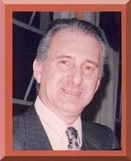

El Dr. Mario A. Rosen es médico, educador,
escritor, y empresario exitoso. Tiene 63 años. Socio fundador de Escuela
de Vida, Columbia Training System,
y Dr. Rosen & Asociados. Desde hace 15 años coordina grupos de
entrenamiento en Educación Responsable para el Adulto. Ha coordinado
estos cursos
en Neuquén, Córdoba, Tucumán, Rosa rio, Santa Fe, Bahía
Blanca y en Centro América. Médico residente y Becario en Investigación
clínica del
Consejo Nacional de Residencias Médicas (UBA). Premio Mezzadra de la
Facultad de Ciencias Médicas al mejor trabajo de investigación
(UBA).
Concurrió a cursos de perfeccionamiento y actualización en conducta
humana en EEUU y Europa. Invitado a coordinar cursos de motivación
en
Amway y Essen Argentina, Dealers de Movicom Bellsouth, EPSA, Alico Seguros,
Nature, Laboratorios Parke Davis, Melaleuka Argentina, BASF.
La Argentina Insolente En mi casa me enseñaron bien. Regla N° 1: En esta casa las reglas
no se discuten. Y esta regla se cumplía en ese estricto
orden. Una exigencia de mamá, que No había que pagar rescate o ir a
retirarlos a la morgue. |
 |
Usted probablemente dirá que
ya desde chiquito yo era un sometido, un cobarde conformista o, si prefiere,
un pequeño fascista, pero acépteme
esto: era muy aliviado saber que uno tenía reglas que respetar. Las
reglas me contenían, me ordenaban y me protegían. Me contenían
al darme un
horizonte para que mi mirada no se perdiera en la nada, me protegían
porque podía apoyarme en ellas dado que eran sólidas... Y me
ordenaban porque es
bueno saber a qué atenerse. De lo contrario, uno tiene la sensación
de
abismo, abandono y ausencia.
Las reglas a cumplir eran fáciles, claras,
memorables y tan reales y consistentes como eran “lavarse las manos antes
de sentarse a la mesa”
o “escuchar cuando los mayores hablan”.
Había otro detalle, las mismas personas que
me imponían las reglas eran las mismas que las cumplían a rajatabla
y se encargaban de que todos los de la
casa las cumplieran. No había diferencias. Éramos todos iguales
ante la Sagrada Ley Casera.
Sin embargo, y no lo dude, muchas veces desafié
“las reglas” mediante el sano y excitante proceso de la “travesura”
que me permitía acercarme al
borde del universo familiar y conocer exactamente los límites. Siempre
era descubierto, denunciado y castigado apropiadamente. .
La travesura y el castigo pertenecían a un
mismo sabio proceso que me permitía mantener intacta mi salud mental.
No había culpables sin castigo y
no había castigo sin culpables. No me diga, uno así vive en un
mundo predecible..
El castigo era una salida terapéutica y elegante
para todos, pues alejaba el rencor y trasquilaba a los privilegios. Por lo tanto
las travesuras no eran
acumulativas.. Tampoco existía el dos por uno. A tal travesura tal castigo.
Nunca me amenazaron con algo que no estuvieran dispuestos y preparados a cumplir..
Así fue en mi casa. Y así se suponía
que era más allá de la esquina de mi casa. Pero no. Me enseñaron
bien, pero estaba todo mal. Lenta y
dolorosamente comprobé que más allá de la esquina de mi
casa había “travesuras” sin “castigo”, y una
enorme cantidad de “reglas” que no se
cumplían, porque el que las cumple es simplemente un estúpido
(o un boludo, si me lo permite).
El mundo al cual me arrojaron sin anestesia estaba
patas para arriba.
Conocí algo que, desde mi ingenuidad adulta (sí, aún sigo
siendo un ingenuo), nunca pude digerir, pero siempre me lo tengo que comer:
"la
impunidad". ¿Quiere saber una cosa? En mi casa no había impunidad.
En mi casa había justicia, justicia simple, clara, e inmediata.
Pero también había piedad.
Le explicaré: Justicia, porque “el
que las hace las paga”. Piedad, porque uno cumplía la condena estipulada
y era dispensado, y su dignidad quedaba
intacta y en pie. Al rincón, por tanto tiempo, y listo... Y ni un minuto
más, y ni un minuto menos. Por otra parte, uno tenía la convicción
de que
sería atrapado tarde o temprano, así que había que pensar
muy bien antes de sacar los pies del plato.
Las reglas eran claras. Los castigos eran claros.
Así fue en mi casa.
Y así creí que sería en la vida. Pero me equivoqué.
Hoy debo reconocer que en mi casa de la infancia había algo que hacía
la diferencia, y hacía que
todo funcionara. En mi casa había una “Tercera Regla” no
escrita y, como todas las reglas no escritas, tenía la fuerza de un precepto
sagrado. Esta
fue la regla de oro que presidía el comportamiento de mi casa:
Regla N° 3: No sea insolente. Si rompió la regla, acéptelo, hágase responsable, y haga lo que necesita ser hecho para poner las cosas en su lugar.
Ésta es la regla que fue demolida en la sociedad
en la que vivo. Eso es lo que nos arruinó. LA INSOLENCIA. Usted puede
romper una regla -es su riesgo-
pero si alguien le llama la atención o es atrapado, no sea arrogante
e insolente, tenga el cora je de aceptarlo y hacerse responsable. Pisar el
césped, cruzar por la mitad de la cuadra, pasar semáforos en rojo,
tirar papeles al piso, tratar de pisar a los peatones, todas son travesuras
que se
pueden enmendar... a no ser que uno viva en una sociedad plagada de
insolentes.
La insolencia de romper la regla, sentirse un vivo, e insultar, ultrajar y denigrar
al que responsablemente intenta advertirle o hacerla
respetar. Así no hay remedio.
El mal de los Argentinos es la insolencia. La insolencia
está compuesta de petulancia, descaro y desvergüenza. La insolencia
hace un culto
de cuatro principios:
- Pretender saberlo todo
- Tener razón hasta morir
- No escuchar
- Tú me importas, sólo si me sirves.
La insolencia en mi país admite que la gente
se muera de hambre y que los niños no tengan salud ni educación.
La insolencia en mi país logra que los
que no pueden trabajar cobren un subsidio proveniente de los impuestos que pagan
los que sí pueden trabajar (muy justo), pero los que no pueden
trabajar, al mismo tiempo cierran los caminos y no dejan trabajar a los que
sí pueden trabajar para aportar con sus impuestos a aquéllos que,
insolentemente, les impiden trabajar. Léalo otra vez, porque parece mentira.
Así nos vamos a quedar sin trabajo todos.
Porque a la insolencia no le importa, es pequeña, ignorante y arrogante.
Bueno, y así están las cosas. Ah,
me olvidaba, ¿Las reglas sagradas de mi casa serían las mismas
que en la suya? Qué interesante. ¿Usted sabe que
demasiada gente me ha dicho que ésas eran también las reglas en
sus casas?
Tanta gente me lo confirmó que llegué a la conclusión que
somos una inmensa mayoría. Y entonces me pregunto, si somos tantos, ¿por
qué nos acostumbramos
tan fácilmente a los atropellos de los insolentes? Yo se lo voy a contestar.
PORQUE ES MÁS CÓMODO, y uno se acostumbra
a cualquier cosa, para no tener que hacerse responsable. Porque hacerse responsable
es tomar un compromiso y
comprometerse es aceptar el riesgo de ser rechazado, o criticado. Además
aunque somos una inmensa mayoría, no sirve para nada, ellos son pocos
pero muy bien organizados. Sin embargo, yo quiero saber cuántos somos
los que
estamos dispuestos a respetar estas reglas.
Le propongo que hagamos algo para identificarnos
entre nosotros. No tire papeles en la calle. Si ve un papel tirado, levántelo
y tírelo en un tacho
de basura. Si no hay un tacho de basura, llévelo con usted hasta que
lo encuentre. Si ve a alguien tirando un papel en la calle, simplemente
levántelo usted y cumpla con la regla 1. No va a pasar mucho tiempo en
que seamos varios para levantar un mismo papel.
Si es peatón, cruce por donde corresponde y respete los semáforos, aunque no pase ningún vehículo, quédese parado y respete la regla.
Si es un automovilista, respete los semáforos y respete los derechos del peatón. Si saca a pasear a su perro, levante los desperdicios.
Todo esto parece muy tonto, pero no lo crea, es
el único modo de comenzar a desprendernos de nuestra proverbial INSOLENCIA.
Yo creo que la insolencia
colectiva tiene un solo antídoto, la responsabilidad individual. Creo
que la grandeza de una nación comienza por aprender a mantenerla limpia
y ordenada..
Si todos somos capaces de hacer esto, seremos capaces de hacer cualquier cosa.
Porque hay que aprender a hacerlo todos los días.
Ése es el desafío.
Los insolentes tienen éxito porque son insolentes todos los días,
todo el tiempo. Nuestro país está condenado:
O aprende a cargar con la disciplina o cargará siempre con el arrepentimiento.
¿A USTED QUÉ LE PARECE? ¿PODREMOS
RECONOCERNOS EN LA CALLE ?
Espero no haber sido insolente. En ese caso, disculpe.
Dr. Mario Rosen
Volver